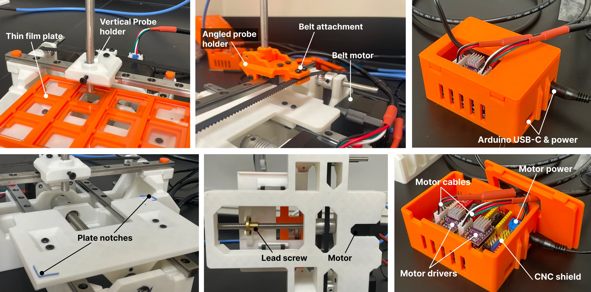

Open-Source Spectrometer Gantry
DOI: 10.5206/joh.v9i1.23044 · github.com/uwsunlab/Kamome
Undergraduate Researcher · University of Washington · Oct 2023 ~ Aug 2025
Skills
Motivation
My research focused on designing systems that enable automated workflows for creating, measuring and optimizing new solar cell materials.
What I did & learned
1) Built an open-source gantry device -> 4x inspection throughput
I designed Kamome, a modular spectrometer for the Opentrons OT-2 liquid handling robot. Driven by an Arduino and 2 stepper motors, it allows us to inspect samples directly without manually moving lab plates; more reliably and at 4x the speed.
I iterated on the design through frequent discussions with lab teammates, ensuring all spatial/process requirements were met. It’s important that Kamome positions each plate precisely under the spectrometer to return consistent substrate readings. I used timing belts with adjustable tension to mitigate backlash, achieving sub-0.2mm accuracy while keeping costs low.
This was also my first intro to academic research through a self-guided project. It taught me how to approach open-ended problems, present effectively and drive constructive peer discussions.
2) Developed a proof-of-concept closed-loop ML-driven workflow
Full autonomous substrate optimization
Using Kamome, I helped build a Bayesian optimization workflow linking pipetting, mixing and inspection. This was my first real use of applied ML and it opened my eyes to the possibilities of closed-loop systems. Leveraging RGB and spectrometry results, we built a working proof-of-concept closed-loop color optimizer that can learn to mix any color we give it using CMYK inks:
